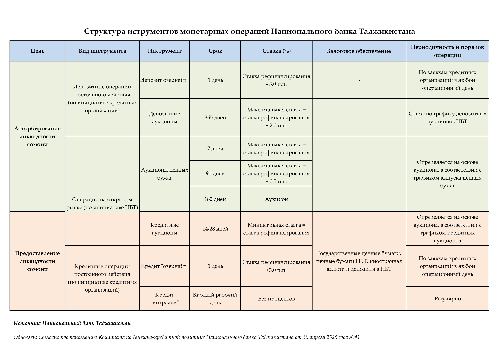

Национальный банк Таджикистана использует следующие рычаги (инструменты) для выполнения своих задач и целей в области денежно-кредитной политики:
Согласно Закону Республики Таджикистан «О Национальном банке Таджикистана», ставка рефинансирования — это минимальная процентная ставка, по которой Национальный банк Таджикистана предоставляет кредиты кредитным учреждениям, или ставка доходности, по которой Национальный банк Таджикистана предоставляет кредиты исламским кредитным учреждениям.
В то же время ставка рефинансирования рассматривается как главный рычаг денежно-кредитной политики для проведения денежных операций и устанавливается на основе всестороннего анализа целевых показателей, потенциальных внутренних и внешних рисков, а также позиции денежно-кредитной политики.
Ставка рефинансирования играет информационную и сигнальную роль, описывая направление и позицию денежно-кредитной политики на будущее (среднесрочное или долгосрочное).
В зависимости от изменения ставки рефинансирования по сравнению с её равновесным уровнем определяется денежно-кредитная политика на следующий период. В экономической литературе равновесное состояние ставки рефинансирования называется нейтральной процентной ставкой.
Тот факт, что ставка рефинансирования равна своей нейтральной (равновесной) ставке, указывает на наличие сбалансированного уровня спроса и предложения, стабильного экономического роста в пределах его потенциала и стабильного уровня инфляции в пределах установленного целевого показателя.
Если ставка рефинансирования выше (ниже) своего нейтрального уровня, это указывает на жёсткую (мягкую) денежно-кредитную политику.
Операции на открытом рынке являются одним из активных и эффективных инструментов денежно-кредитной политики. Они включают в себя изъятие ликвидности (свободных денежных средств на корреспондентских счетах кредитных организаций в Национальном банке Таджикистана) или предоставление ликвидности банковской системе посредством проведения аукционов. Важной особенностью данного инструмента является то, что он позволяет Национальному банку Таджикистана активно воздействовать на уровень ликвидности и краткосрочные процентные ставки на рынке.
Операции Национального банка Таджикистана на открытом рынке, согласно современной международной практике, в целом делятся на две группы:
Эмиссия ценных бумаг является одним из основных косвенных инструментов денежно-кредитной политики и позволяет Национальному банку Таджикистана привлекать избыточную ликвидность банковской системы и регулировать денежную массу посредством аукционов ценных бумаг. Аукционы ценных бумаг проводятся регулярно по плану через электронную торговую систему в режиме реального времени (online). Процентная ставка по заявкам кредитных организаций устанавливается Комитетом по денежно-кредитной политике Национального банка Таджикистана. Нормативно-правовую основу, порядок и условия проведения данных операций регулирует Инструкция №189 «О ценных бумагах Национального банка Таджикистана».
Кредитный аукцион представляет собой предоставление краткосрочных кредитов, на которые кредитные организации подают заявки для получения краткосрочной ликвидности у Национального банка Таджикистана. Кредитные аукционы Национального банка Таджикистана проводятся по графику. Процентная ставка по заявкам кредитных организаций устанавливается Комитетом по денежно-кредитной политике Национального банка Таджикистана. Нормативно-правовую основу, порядок и условия проведения данных операций регулирует Инструкция №220 «О краткосрочных операциях рефинансирования».
Постоянно действующие инструменты (овернайт) используются Национальным банком Таджикистана посредством привлечения или предоставления ликвидности на срок одной ночи с целью регулирования краткосрочных процентных ставок на межбанковском рынке, развития денежного рынка, обеспечения эффективности денежно-кредитной политики, а также содействия эффективному и непрерывному функционированию системы платежей.
Национальный банк Таджикистана предоставляет кредитным организациям несколько постоянно действующих инструментов (овернайт):
Кредит, предоставляемый кредитной организации под залог по установленной процентной ставке в течение операционного дня с условием его возврата не позднее следующего рабочего дня. Процентная ставка по заявкам кредитных организаций устанавливается Комитетом по денежно-кредитной политике Национального банка Таджикистана. Нормативно-правовую основу, порядок и условия проведения данных операций регулирует Инструкция №220 «О краткосрочных операциях рефинансирования».
Кредит, предоставляемый под залог в течение операционного дня с условием его погашения в конце рабочего дня. Нормативно-правовую основу, порядок и условия проведения данных операций регулирует Инструкция №220 «О краткосрочных операциях рефинансирования».
Депозит (овернайт) — краткосрочная депозитная операция, при которой кредитная организация размещает средства в национальной валюте в Национальном банке Таджикистана с условием их возврата на следующий рабочий день. Процентная ставка по заявкам кредитных организаций устанавливается Комитетом по денежно-кредитной политике Национального банка Таджикистана. Нормативно-правовую основу, порядок и условия проведения данных операций регулирует Инструкция №226 «О проведении краткосрочных депозитных операций в национальной валюте Национальным банком Таджикистана».
Аукцион, в рамках которого Национальный банк Таджикистана принимает средства кредитных организаций в национальной валюте на условиях возвратности, платности (уплаты процентов) и срочности. Депозитные аукционы Национального банка Таджикистана проводятся в соответствии с планом. Процентная ставка по заявкам кредитных организаций устанавливается Комитетом по денежно-кредитной политике Национального банка Таджикистана. Нормативно-правовую основу, порядок и условия проведения данных операций регулирует Инструкция №226 «О проведении краткосрочных депозитных операций в национальной валюте Национальным банком Таджикистана».
Обязательные резервы являются одним из инструментов реализации денежно-кредитной политики Национального банка Таджикистана и представляют собой механизм регулирования общей ликвидности банковской системы.
Кредитные организации обеспечивают выполнение требований по обязательным резервам в национальной валюте путём поддержания средств на корреспондентском счёте, открытом в Национальном банке Таджикистана, в соответствии с календарём обязательных резервов.
Кредитная организация формирует обязательные резервы в иностранной валюте путём перечисления средств на соответствующий счёт, открытый в Национальном банке Таджикистана для этих целей.
Операции с иностранной валютой включают покупку и продажу иностранной валюты на валютных рынках. Операции осуществляются в рамках валютной политики Национального банка Таджикистана и в целом преследуют две основные цели:
Стабилизация чрезмерного колебания курса сомони по отношению к иностранной валюте и внутреннего валютного рынка.
Увеличение международных резервов и доведение их объёма до требуемого уровня международных стандартов устойчивости международных резервов.
Операции с иностранной валютой на межбанковском валютном рынке осуществляются путём проведения аукционов иностранной валюты, спотовых сделок, а также операций своп/форвард через электронную торговую систему.
